Electrical Systems and Analogies
Electrical systems store, dissipate, and transfer energy.
They can be modeled using an energy-based approach by identifying effort and flow variables and their relationships.
1. Fundamental Electrical Quantities
| Quantity | Symbol | Unit | Description |
|---|---|---|---|
| Voltage (effort variable) | $v(t)$ | Volt (V) | Electrical potential difference |
| Current (flow variable) | $i(t)$ | Ampere (A) | Rate of electric charge flow |
| Charge | $q(t)$ | Coulomb (C) | Total electric charge |
| Power | $p(t)$ | Watt (W) | Instantaneous energy rate, $p = v i = v \frac{dq}{dt}$ |
| Energy | $W$ | Joule (J) | Stored or dissipated electrical energy |
1.1 Energy Relation
Current is always the time derivative of charge:
$$ i(t) = \frac{dq(t)}{dt} $$
Instantaneous power:
$$ p(t) = v(t) i(t) = v(t) \frac{dq(t)}{dt} $$
Total energy over time:
$$ W = \int_0^t v(\tau) \frac{dq(\tau)}{d\tau} \, d\tau $$
This mirrors the mechanical power relation:
$$ P = F v $$
2. Basic Electrical Elements
- Resistor (R) – energy dissipation
- Capacitor (C) – energy storage (electric field)
- Inductor (L) – energy storage (magnetic field)
2.1 Resistor — Power Dissipation
Ohm’s law in terms of charge:
$$ v(t) = R \frac{dq(t)}{dt} $$
Power dissipated:
$$ P = v i = v \frac{dq}{dt} = R \left(\frac{dq}{dt}\right)^2 $$
Analogy:
- Viscous damper in mechanical systems — dissipates energy.
2.2 Capacitor — Potential Energy Storage
Voltage–charge relation:
$$ v(t) = \frac{q(t)}{C} $$
Current is derivative of charge:
$$ i(t) = \frac{dq(t)}{dt} = C \frac{dv(t)}{dt} $$
Stored energy:
$$ E_C = \frac{1}{2} C v^2 = \frac{1}{2} \frac{q^2}{C} $$
Analogy:
- Capacitor ↔ Spring (stores potential energy)
2.3 Inductor — Magnetic Energy Storage
Voltage–current relation in terms of charge:
$$ v(t) = L \frac{di(t)}{dt} = L \frac{d^2 q(t)}{dt^2} $$
Current:
$$ i(t) = \frac{dq(t)}{dt} $$
Stored energy:
$$ E_L = \frac{1}{2} L i^2 = \frac{1}{2} L \left(\frac{dq}{dt}\right)^2 $$
Analogy:
- Inductor ↔ Mass (stores kinetic energy)
3. Electrical Domain Equations
Using Kirchhoff’s laws in terms of charge:
- KVL (Voltage Law):
$$ \sum v = 0 \quad \Rightarrow \quad \sum \text{(voltage across elements)} = 0 $$
- KCL (Current Law):
$$ \sum i = \sum \frac{dq}{dt} = 0 $$
These correspond to Newton’s law and D’Alembert’s principle.
4. Energy Analogy Between Mechanical and Electrical Systems
4.1 Force–Voltage Analogy (Direct)
| Mechanical | Electrical | Comment |
|---|---|---|
| Force ($F$) | Voltage ($v$) | Effort variable |
| Velocity ($v = \dot{x}$) | Current ($i = dq/dt$) | Flow variable |
| Displacement ($x$) | Charge ($q$) | State variable |
| Mass ($m$) | Inductor ($L$) | Kinetic energy storage |
| Spring ($k$) | $1/C$ | Potential energy storage |
| Damping ($b$) | Resistance ($R$) | Energy dissipation |
5. Example — RLC Circuit vs Mass–Spring–Damper
Series RLC circuit:

KVL in terms of charge:
$$ v(t) = L \frac{d^2 q}{dt^2} + R \frac{dq}{dt} + \frac{1}{C} q $$
Mechanical analog:
$$ m \ddot{x} + b \dot{x} + k x = F(t) $$
Correspondence:
| Mechanical | Electrical | Relationship |
|---|---|---|
| $F(t)$ | $v(t)$ | Excitation |
| $m$ | $L$ | Inertia ↔ Inductance |
| $b$ | $R$ | Damping ↔ Resistance |
| $k$ | $1/C$ | Stiffness ↔ Inverse capacitance |
| $x$ | $q = \int i dt$ | Displacement ↔ Charge |